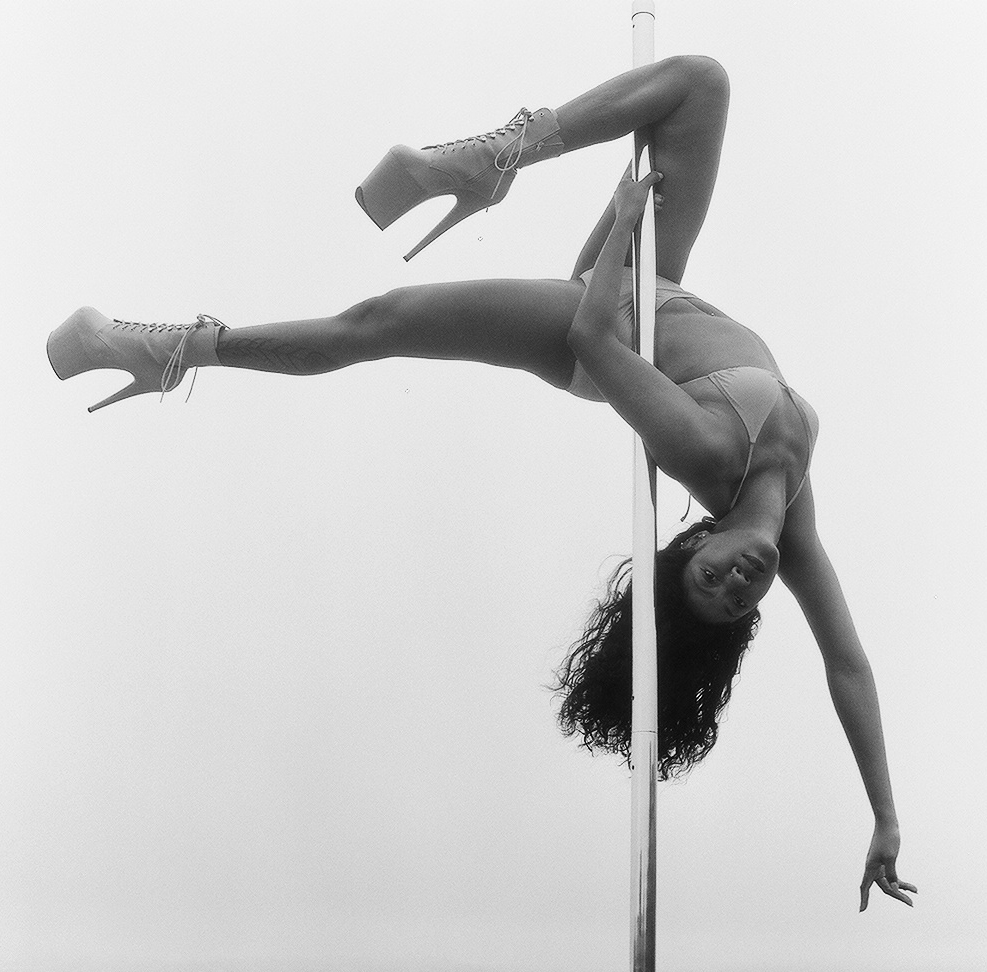
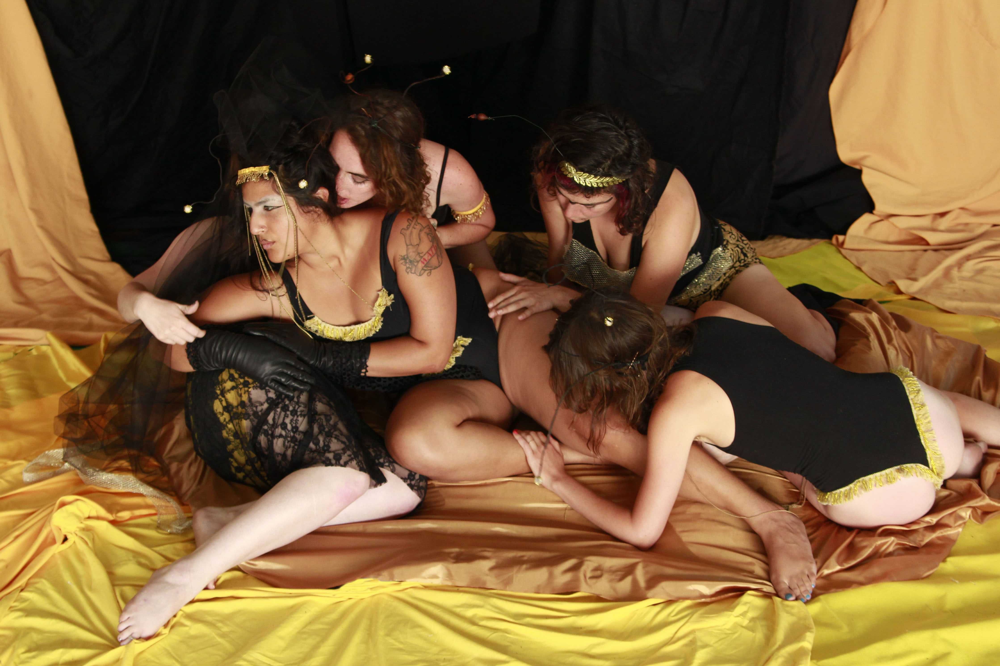
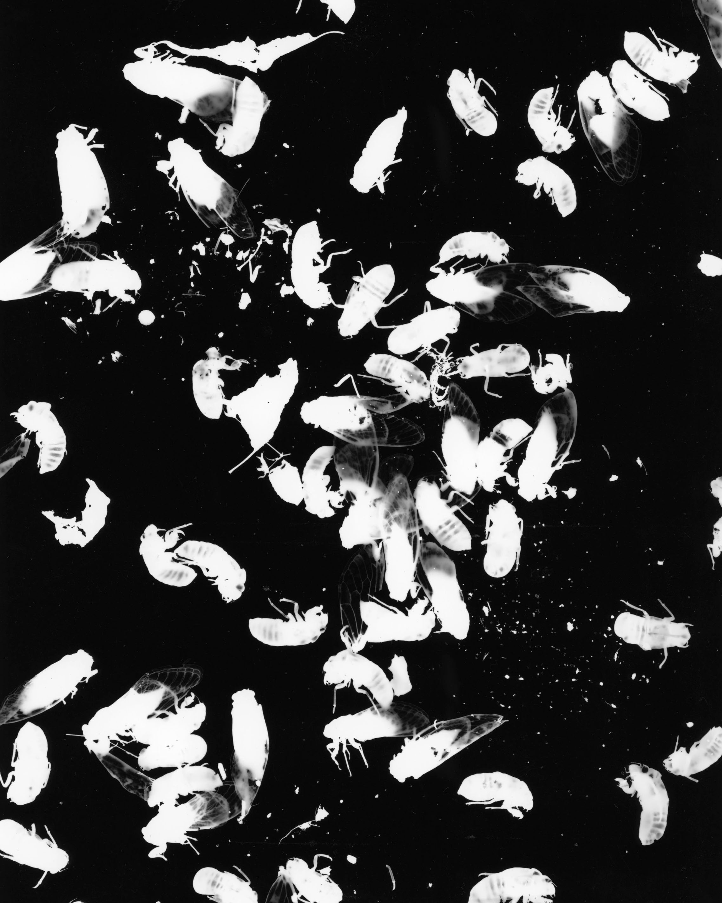
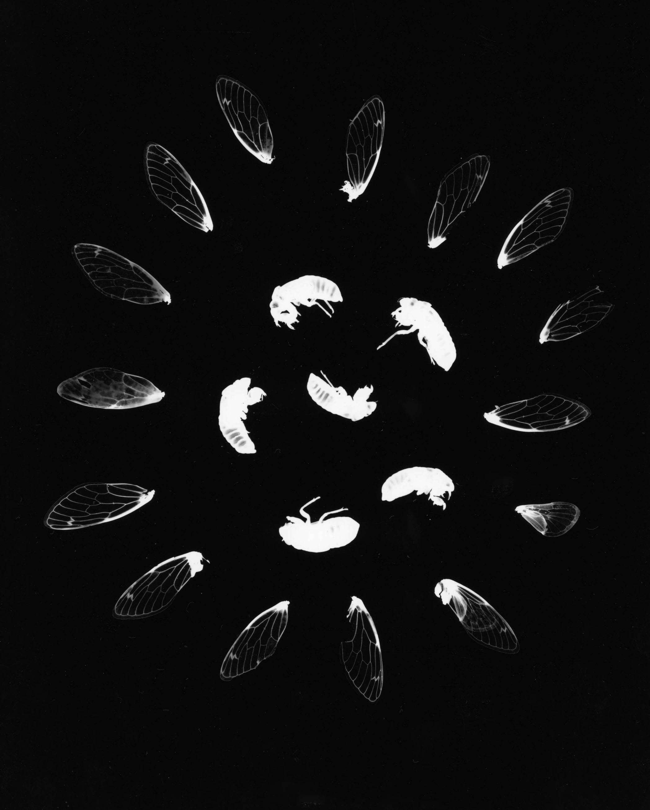
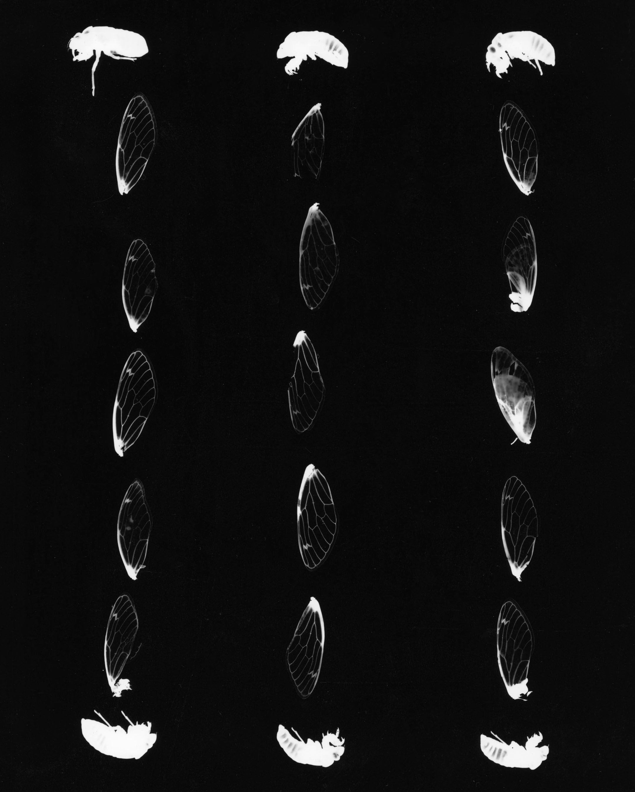
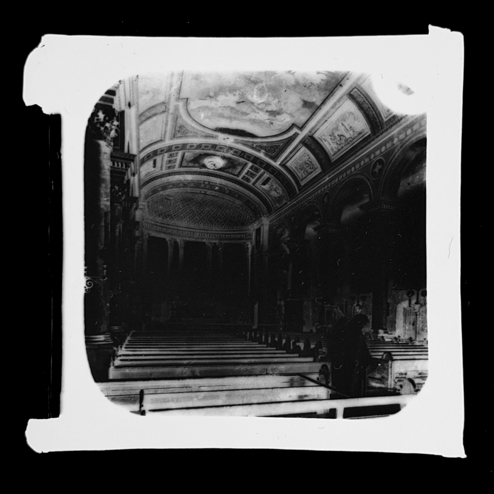
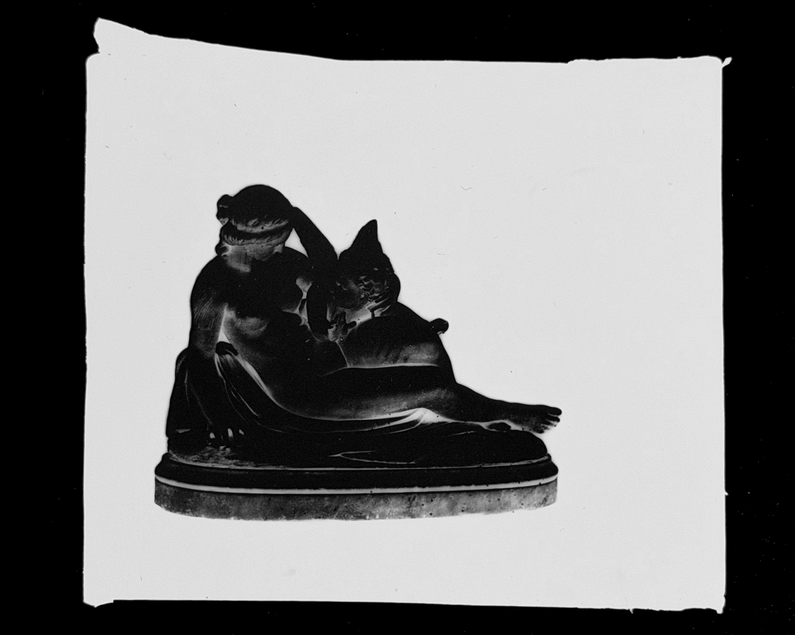
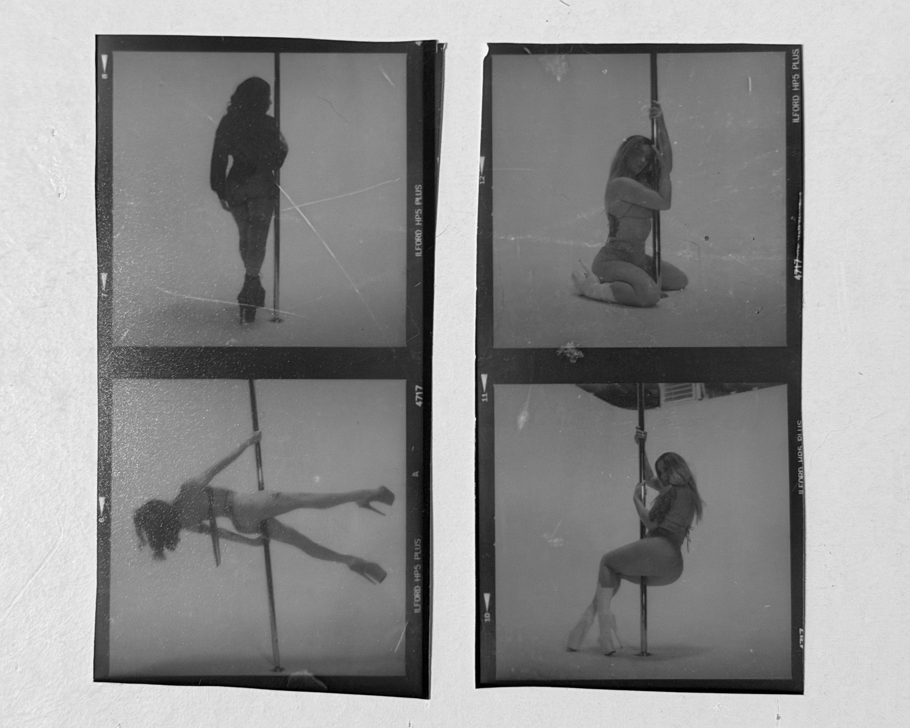
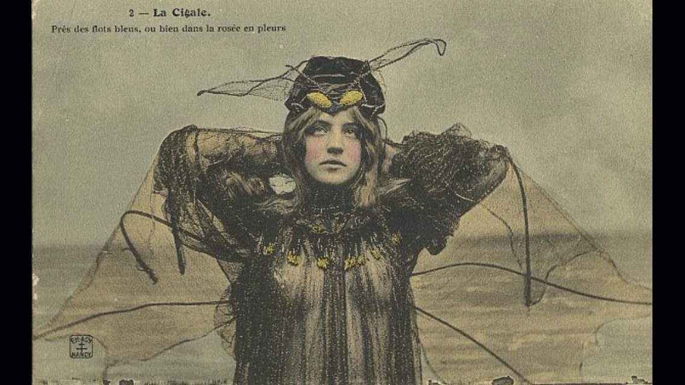
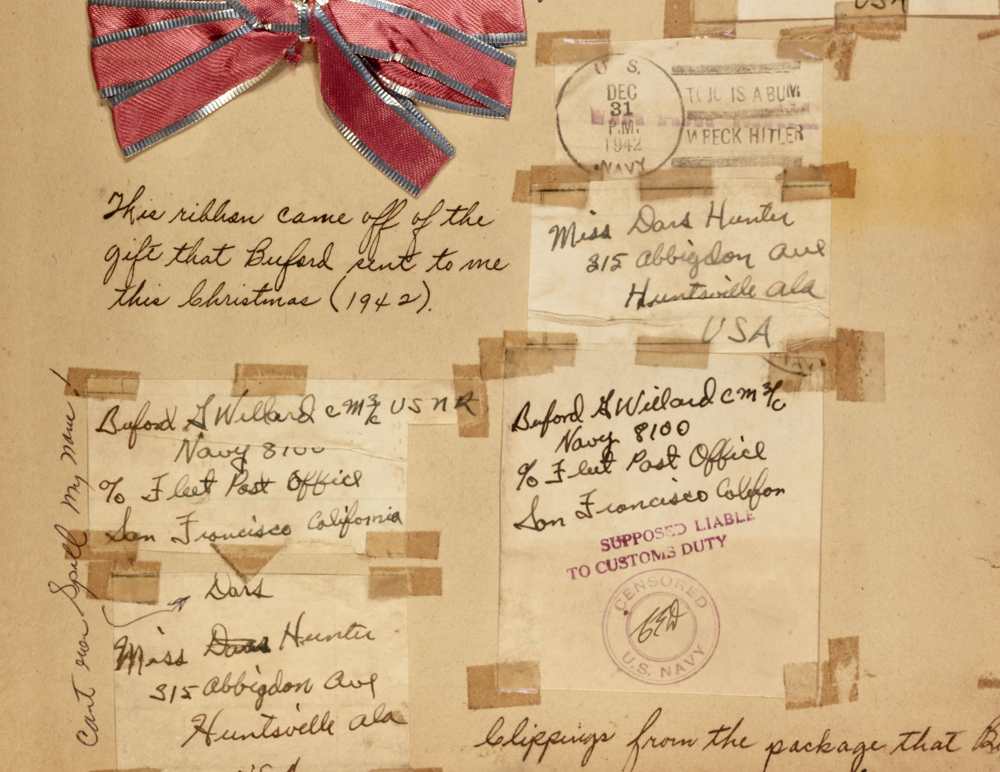

C.A. (Cache)
Greenlee
Nashville, TN · Artist Photographer

About
C.A. Greenlee (Cache) is an artist whose work is preoccupied with the natural world, photographic processes, alchemy and ephemera.
Drawn to what is already at the threshold... to evidence of lives lived, to disappearing acts and desire paths.
Current and ongoing projects include contact prints from found glass slide negatives merged with cicada photograms and silver gelatin prints produced with pinhole cameras made from beelining boxes.
The work asks you to be alive to the simultaneity of when.



Found at an estate sale. Sealed in a silver glass envelope. These glass slides spent decades in a box. Cicadas live underground and only emerge every 17 years. Shedding everything they dont need and finally letting themselves be known.
To make a contact print from a found glass negative is to give it its own kind of emergence. New light passes through for the first time in a generation. As the image surfaces, what was buried becomes visible. The cicadas bear witness to their story.
The cicadas are witness.


Cache first learned darkroom printing as a teenager out of a trailer in rural Alabama. Now holding a BFA and MFA, Cache teaches community darkroom education at Belmont University and maintains a private art practice.


Beelining Box Pinhole
Handheld, hand-made, and light-tight object, the bee lining box is used to catch wild honey bees to find a hive. Transforming it into a pinhole camera it is taking on a second identity and beelining has become a photographic form of research.
Like most of the work here, this is an evolving project — stay tuned. Exciting developments under way.

The honeybee communicates through elegant and intricate movement. The success of her dances are tied to her hive's survival. Detailed directions are expressed through circular moves that the others then will repeat, enabling them to use their wings to beeline toward creating the world's earliest form of sweetness.
Dance has long been a practice for survival for humans too. And the vertical axis for which dancers orbit is an ancient one
a line connecting the many hands of the deities who came before.




A ribbon from a package sent from the Navy, 1942. Huntsville, Alabama.
An excerpt from my great grandmother's scrapbook.
Contact
Contact Cache for assignments, any questions, or just to send a note.
photo@cacheville.com
Based in Nashville, TN
·